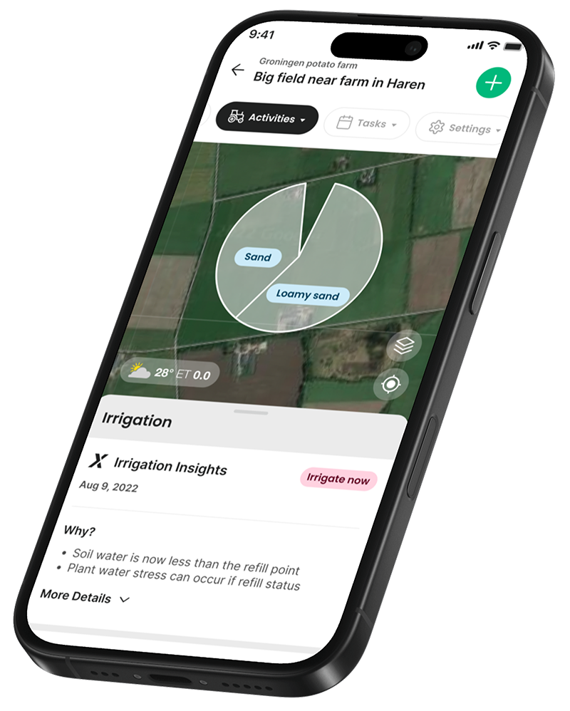

Field Intelligence Platform
Know your soil.
Grow smarter.
Real-time soil sensors, agronomic intelligence, and precision irrigation — all in one platform trusted by farmers across 40+ countries.
Book a Demo
